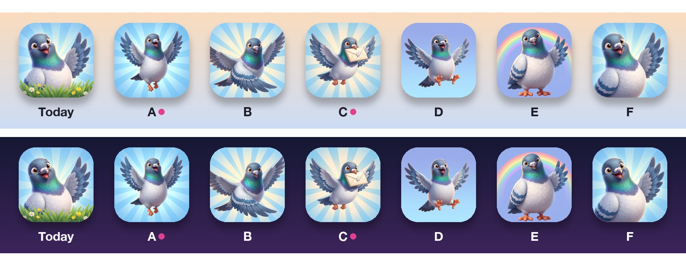
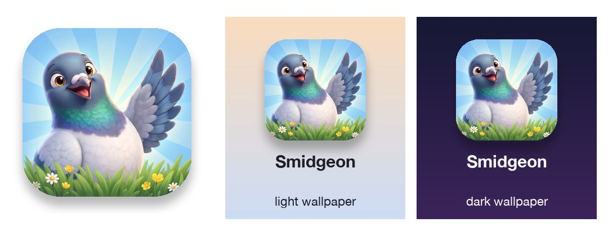
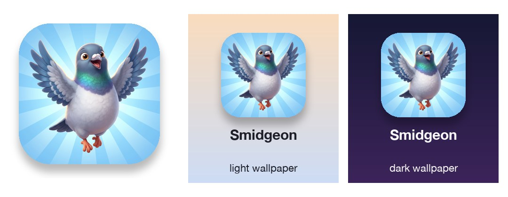
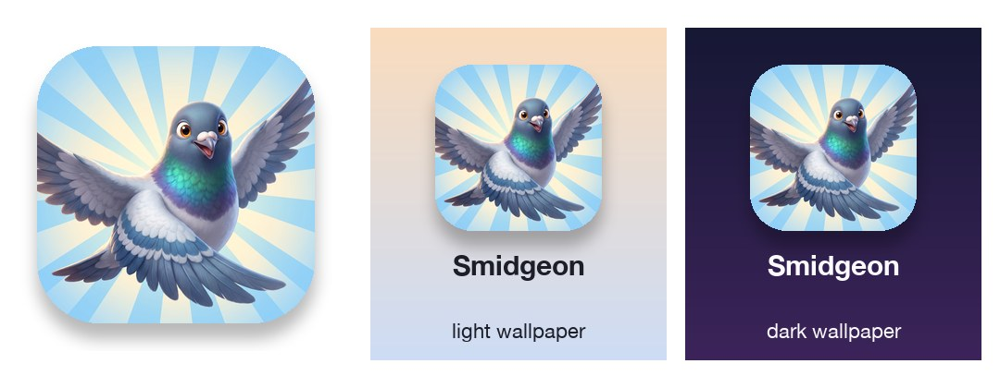
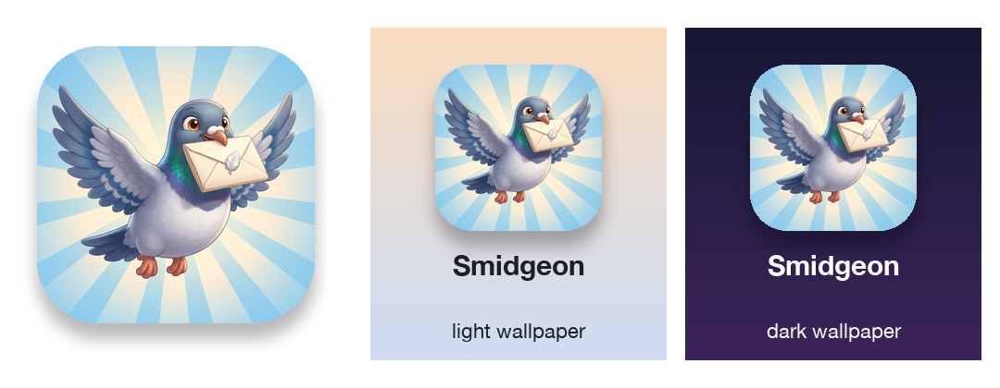
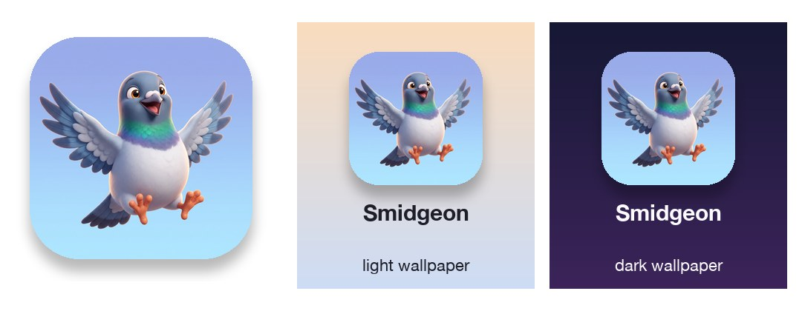
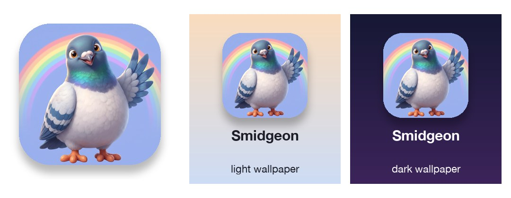
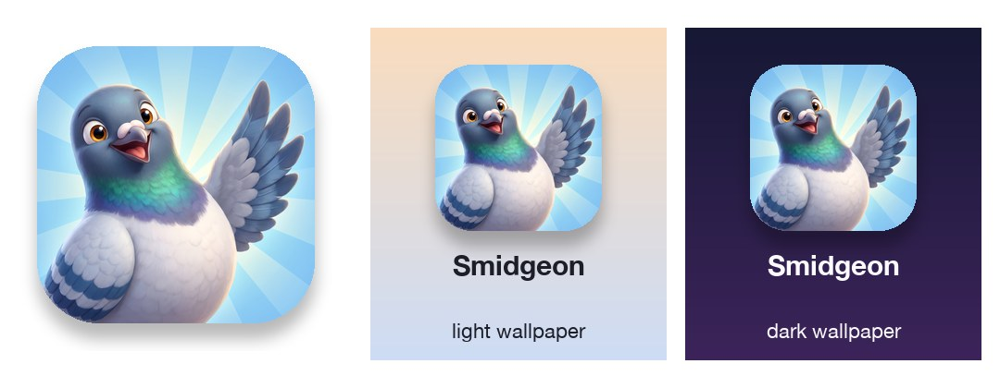

The six options from 16 November, A to F, each next to the icon in the app today. The small ones are the real home-screen size, on a light and a dark wallpaper. A and C were the favourites. Tell us your pick on the Desk card; the app keeps today's icon until one is chosen.

Smidgeon waving in a sunburst, with grass and flowers. It came from option F on 16 November.






